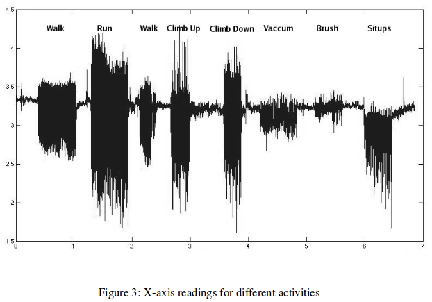

At first, the data is collected from the triaxial accelerometer. Then Feature extraction is done using machine learning algorithms and lastly the classifiers is trained to differentiate from different activities.
Graphs for different activities is given We found that activities can be recognized with fairly high accuracy using a single triaxial accelerometer. Activities that are limited to the movement of just hands or mouth (e.g brushing) are comparatively harder to recognize using a sin- gle accelerometer worn near the pelvic region. An interesting extension would be to see whether ”short activities” (e.g opening the door with a swipe card) can be recognized from accelerometer data